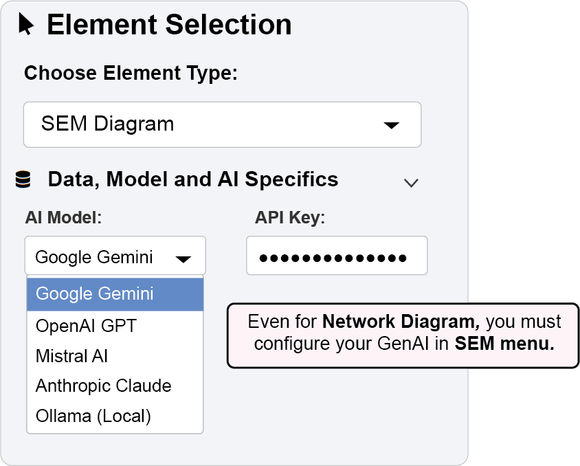

9 AI-Powered Network Layout Generation
The GenAI layout feature in ggsem uses artificial intelligence to automatically generate optimized visual arrangements for your network diagrams, potentially providing unique layouts that may not be achievable with traditional algorithms.
9.1 Getting Started: API Configuration
Before using AI features for network layout generation, you’ll need to configure API access:
9.1.1 Step-by-Step Setup:
Navigate to the “Data, Model and AI Specifics” panel in the SEM Diagram section.
In the “AI Model” dropdown, select your preferred service:
- Google Gemini - Excellent for general SEM tasks
- OpenAI GPT - Strong with complex model descriptions
- Mistral AI - Balanced performance and efficiency
- Anthropic Claude - Advanced reasoning capabilities
- Ollama (Local) - Complete privacy with local processing
Configure API Settings
For Cloud Providers (Gemini, OpenAI, Mistral, Claude):
Locate the API key input field that appears after selecting your provider
Obtain your API key from the provider’s developer portal:
Google AI Studio: https://aistudio.google.com/
OpenAI Platform: https://platform.openai.com/api-keys
Mistral Platform: https://console.mistral.ai/
Anthropic Console: https://console.anthropic.com/
Paste your API key into the input field
For Ollama (Local):
Ensure Ollama is installed and running on your local machine (
ollama serve)Enter your preferred local model name (e.g., “llama2”, “mistral”, “codellama”)
No API key required for local operation
Verify Connection
The interface will indicate successful API configuration
Test by generating a simple model to confirm functionality
9.2 AI-Powered Layout Generation
The GenAI feature automatically generates fresh layouts for your network diagrams.

9.2.0.1 Example 1: Generating an AI-Optimized Layout
Step 1: Configure API Access
In the SEM Diagram section, open the “Data, Model and AI Specifics” panel.
Select your preferred AI provider from the “AI Model” dropdown.
- In this example, Google Gemini is used because it is free.
Enter your valid API key in the provided field.
Once configured, the “GenAI” option will become available in the layout dropdown in Network Diagram menu.
Step 2: Generate the Network Layout
Navigate to the “Network Layout Settings” panel.
From the “Choose Layout Algorithm” dropdown, select “GenAI”.
- Set Layout Width (X) and Layout Height (Y) as
35(see Figure 2). - Set random seed as
14324for reproducibility
- Set Layout Width (X) and Layout Height (Y) as
(Optional) In the “Additional prompts for layout” text box, provide brief context to guide the AI (under 30 words).
Click the “Draw a Network” button.
- The AI generates and displays a novel layout for your network.
- Important: GenAI layouts are non-deterministic - running again may produce different arrangements
Step 3: Customize the Aesthetics
- Use Node Settings,Edge Settings, and Annotation Settings panels to modify:
- Colors, shapes, and sizes
- Font properties and label positioning
- Edge styles and curvature
- All standard aesthetic controls function with GenAI-generated layouts
Step 4: Apply and Lock Your Customizations
- Click “Apply Changes” to update the diagram with new aesthetics
- This preserves the GenAI layout while modifying visual styles
- Does not trigger layout re-generation
- Click “Finalize a Network” to lock the diagram
Prevents further changes to layout and aesthetics via Network menu
Maintains the AI-optimized arrangement
9.2.1 Key Features of GenAI Layout:
Non-deterministic: Different generations may produce varied but valid layouts
Context-aware: AI considers node names and network structure in layout decisions
Optimized spacing: Automatically balances node placement and connection clarity
Novel perspectives: May reveal network patterns not apparent with traditional algorithms